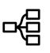
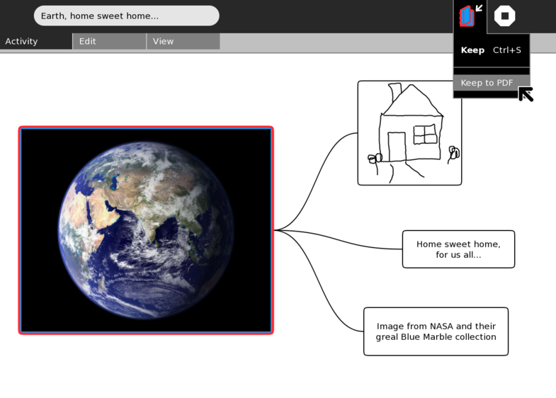
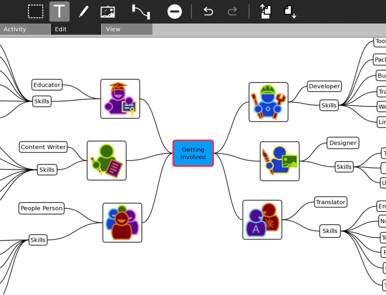
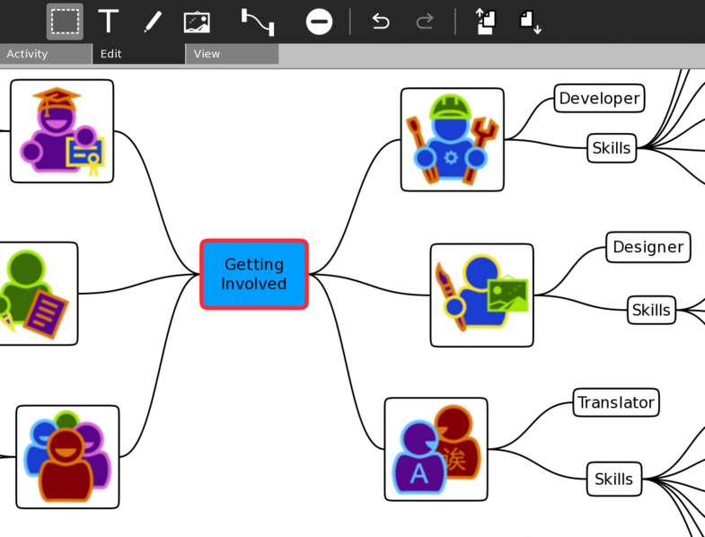
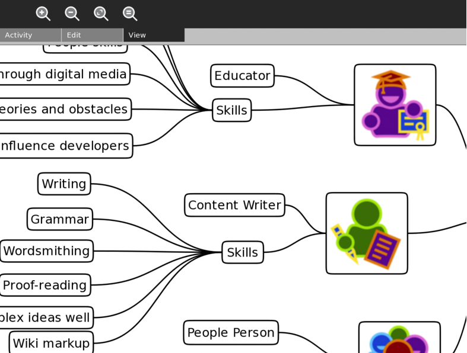
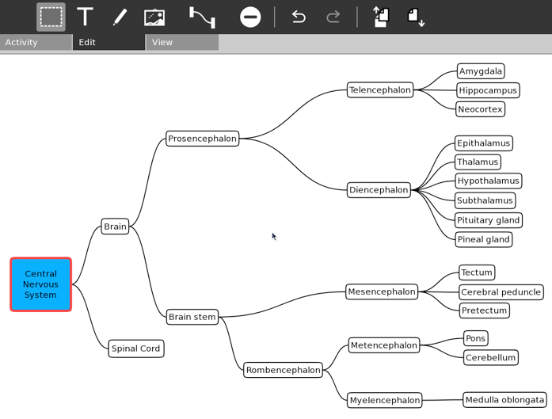
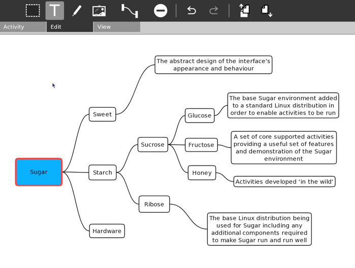

Labyrinth¶
About¶

Labyrinth is a lightweight mind-mapping activity based on an Open Source project called Labyrinth. It allows creating mind maps from a mixture of text, freehand drawings, and images from your Journal. There is an infinite sized canvas for your map that can be panned and zoomed while you work. Maps can be “Kept to PDF” for uploading to web sites, sharing, and printing by others who may not be using Sugar.
Where to get Labyrinth¶
Labyrinth activity is available for download from the Sugar Activity Library: Labyrinth
The source code is available on GitHub.
Gallery¶






Keyboard Shortcuts¶
Esc deselects thought, stops editing current text though
Ctrl + A select all thoughts
Ctrl + E for Edit mode (bounding box selections, and allows editing of existing thoughts)
Ctrl + T for text thought mode (click canvas, or click and drag, to add new thoughts)
Ctrl + D for drawing mode (click canvas, or click and drag, then draw inside thought boundary)
Ctrl + I for image add mode (click canvas, or click and drag, use Journal object picker to select image)
Ctrl + L to link two or more selected thoughts
ERASE to erase one or more selected thoughts
Ctrl + + to zoom in
Ctrl + - to zoom out
Ctrl + 9 zoom to fit window
Ctrl + 0 for original zoom size
Alt + Enter to toggle full screen
Ctrl + Q or Alt + Esc to stop the activity
Mouse/Trackpad shortcuts¶
Single click on the canvas with left button in text/drawing/image mode to create a thought
Drag with left button in text/drawing/image mode to create a thought of a specific size
Single click left button to select an existing thought (typing will append to the thought text)
Double click left button to select a thought and begin editing the text content (all thought text starts selected)
Hold shift and left click thoughts to make multiple selections
Hold ‘hand’ key on XO keyboard and use left button to drag the canvas to pan/scroll
Hold right button to drag individual thoughts
When in drawing mode, hold Shift and draw to erase
Review¶
Where to report problems¶
Please report bugs and make feature requests at laybrinth-activity/issues.